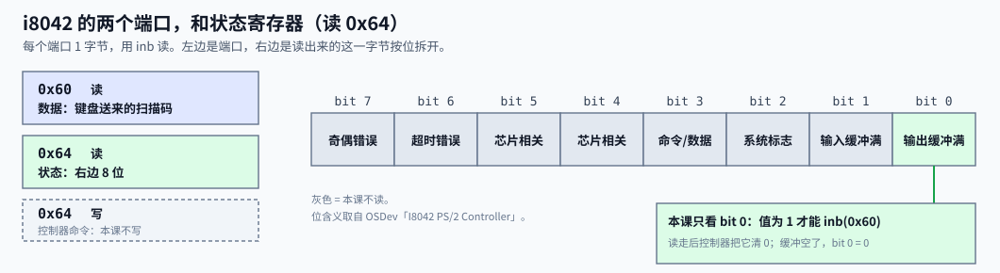
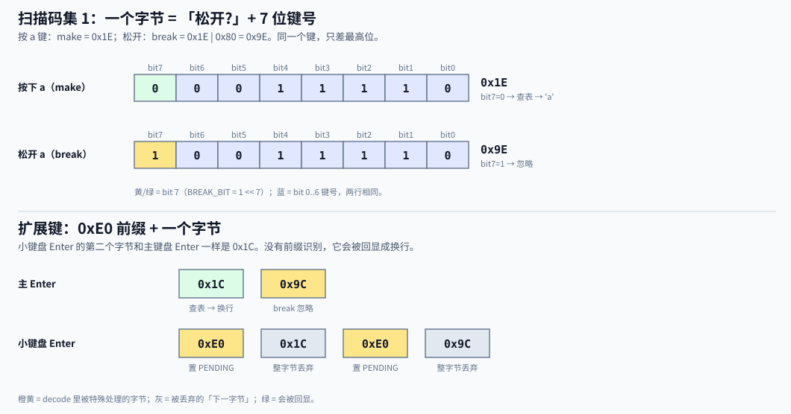
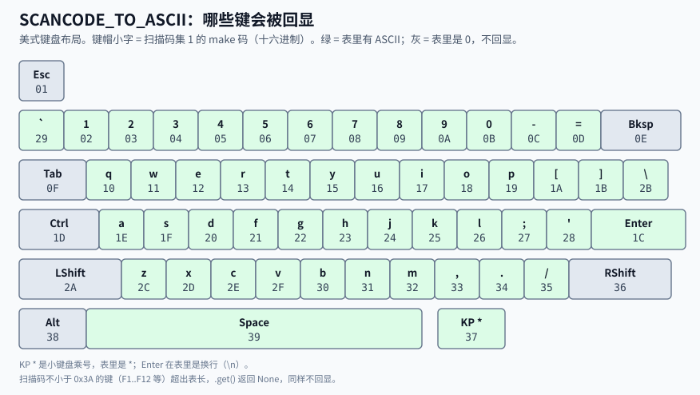

PS/2 键盘：一次按键怎样变成回显字符
端口 0x60 / 0x64、扫描码集 1、IRQ1 到向量 33
Lead: 按下一个键，键盘把一个字节交给 PS/2 控制器。控制器拉起 IRQ1。CPU 进入 handler 后用 inb 读走这个字节，查表得到 ASCII，再用 printk! 回显。松开、扩展键和没有字形的键，都在 decode 里被丢掉。
概念深读（M3 Bite2 背景卡片承诺）。只讲本 Bite 用到的 PS/2 与扫描码集 1。 读完你应能：① 给一串扫描码字节，预测屏幕回显什么；② 说出
init为什么先清缓冲、handler 为什么读到空；③ 指出一次按键从键盘到keyboard::interrupt经过哪几站。
一条链
- 键盘 → 控制器：键盘自己把按键变成字节，PS/2 控制器（经典型号 i8042）收下后放进「输出缓冲区」，并拉起 IRQ1。
- 控制器 → CPU：IRQ1 经 IOAPIC、LAPIC 变成向量 33，进 IDT。这一段在 PIC、LAPIC 与 IOAPIC 里讲过，本页只当黑盒用。
- CPU → 屏幕：handler 读字节、
decode、printk!。这一段是本页的主体。
两个端口
PS/2 控制器占两个 I/O 端口，各 1 字节。读写它们的 inb / outb 是 M3 已经用过的那两条 in / out 指令封装，不再展开。

| 端口 | 读 | 写 | 本课 |
|---|---|---|---|
0x60 |
键盘送来的一个字节 | 发给键盘或控制器的数据 | 只读 |
0x64 |
状态寄存器 | 控制器命令 | 只读 |
写 0x64 能让控制器自检、开关端口、改翻译位。本课不写，沿用固件与 QEMU 留下的默认状态。
bit 0 是「输出缓冲满」。 它为 1 时，0x60 里才有新字节。代码里叫 STATUS_OUTPUT_FULL：
const DATA_PORT: u16 = 0x60;const STATUS_PORT: u16 = 0x64;/// 状态寄存器位 0：输出缓冲区有数据可读。不先查就读 0x60 会拿到过期字节。const STATUS_OUTPUT_FULL: u8 = 1 << 0;1 << 0是把 1 左移 0 位，值就是0b0000_0001。inb(STATUS_PORT) & STATUS_OUTPUT_FULL按位与：只留下 bit 0。结果不为 0，就是缓冲里有字节。- 不先查就读
0x60，会读到过期字节。
扫描码集 1：一个字节说清「哪个键、按下还是松开」
扫描码是键的编号，不是字符。 它不关心你按的是 a 还是 A，也不关心键盘布局。同一个键会发两次字节：

- 按下发 make 码，例如
a是0x1E。 - 松开发 break 码 = make 码 |
0x80，例如0x9E。 - 最高位（bit 7）就是「松开」标志。代码里叫
BREAK_BIT：
/// 扫描码集 1 里，最高位置位表示松开（break），否则是按下（make）。const BREAK_BIT: u8 = 1 << 7;- 判断松开：
scancode & BREAK_BIT != 0。 - 按住不放，硬件会不断重发 make 码。回显也就重复出现，这是预期行为。
为什么是「集 1」。 现代键盘本身发的是集 2。PS/2 控制器默认带翻译功能，把集 2 翻译成集 1，再交给软件（OSDev：i8042 的「Translation」）。本课不写 0x64，就沿用这个默认翻译。如果翻译被关掉，软件拿到集 2 的码，下面的表全部对不上。
0xE0：扩展键的前缀
方向键、右 Ctrl、小键盘 Enter 等「扩展键」，发两个字节：先 0xE0，再一个字节。
问题在第二个字节。小键盘 Enter 的第二个字节是 0x1C，和主键盘 Enter 一样。如果不认前缀，小键盘 Enter 会被当成主键盘 Enter，也回显成换行。
本课的做法很粗：见到 0xE0，记下「下一个字节要丢」，下一个字节无论是什么都丢掉。
/// 上一个字节是 0xE0 前缀时，下一个字节要整个丢弃。/// 只有键盘 handler 读写它，用原子量是为了不用 `static mut`，不是为了并发。static EXTENDED_PENDING: AtomicBool = AtomicBool::new(false);EXTENDED_PENDING必须是static。0xE0和后面那个字节可能落在两次 handler 调用里，普通局部变量活不过一次调用。AtomicBool是「可以安全读写的布尔值」。这里选它只是为了不写static mut，不是为了多线程。store(true)写入；swap(false)一步完成「取出旧值，同时写回 false」。
Pause 键发 6 个字节，以 0xE1 开头。逐字节过一遍 decode，结果全是 None，所以也不会回显。
decode：一个字节的去向
fn decode(scancode: u8) -> Option<u8> { if scancode == EXTENDED_PREFIX { EXTENDED_PENDING.store(true, Ordering::Relaxed); return None; } if EXTENDED_PENDING.swap(false, Ordering::Relaxed) { return None; } if scancode & BREAK_BIT != 0 { return None; } match SCANCODE_TO_ASCII.get(scancode as usize) { Some(&ascii) if ascii != 0 => Some(ascii), _ => None, }}- 返回类型
Option<u8>：要么Some(字节)，要么None（什么也不回显）。 - 关卡顺序有意义：先认
0xE0，再处理「上一个是0xE0」，然后才看 break 位。所以E0 9C里的9C，由前缀规则丢掉，break 规则轮不到它。 .get(i)查表，下标越界返回None，不会崩溃。Some(&ascii) if ascii != 0的意思是：查到了，并且值不是 0。
查表：哪些键会回显
SCANCODE_TO_ASCII 是一张 0x3A 字节的表：下标是 make 码，内容是 ASCII，0 表示不回显。
/// 扫描码集 1 的 make code → ASCII，下标即扫描码（0x00..=0x39），0 = 不回显。/// Esc / Backspace / Tab / 修饰键都留 0：字体里没有它们的字形，修饰键也不在本 Bite 范围。/// 类型标成定长数组，让编译器核对长度恰为 0x3a。const SCANCODE_TO_ASCII: &[u8; 0x3a] = b"\0\x001234567890-=\0\0qwertyuiop[]\n\0asdfghjkl;'`\0\\zxcvbnm,./\0*\0 ";
- 只映射可打印字符、空格和回车（
0x1C→\n）。 - Esc、Backspace、Tab 是 0：字体里没有它们的字形。
- Shift、Ctrl、Alt 是 0：本课不做修饰键。按 Shift+
a，Shift 的 make 码被忽略，a照常回显小写a。 - 小键盘的
*键 make 码是0x37，表里就是*。 - 编号不小于
0x3A的键（F1 到 F12 等）超出表长，查不到，不回显。 - 表的类型是
&[u8; 0x3a]，一个定长数组的引用。长度写错，编译器直接报错。
中断侧：从 IRQ1 到 handler
键盘是外设，IRQ 要经 IOAPIC 才能到 CPU，这和 LAPIC 定时器直接走本地入口不同。本课只用 ioapic::route 这一个入口：
/// 清空控制器里残留的字节，再把 IRQ1 路由到向量 33。/// 必须在 IDT 已装好向量 33 之后调用。pub fn init() -> bool { // 残留字节不清掉，输出缓冲区一直满着，控制器不会再触发新的 IRQ1 while inb(STATUS_PORT) & STATUS_OUTPUT_FULL != 0 { inb(DATA_PORT); } ioapic::route(KEYBOARD_GSI, KEYBOARD_VECTOR as u8, lapic::id())}- 参数
KEYBOARD_GSI = 1：QEMU 默认机上，ISA IRQ1 对应的全局中断线号也是 1。 KEYBOARD_VECTOR = 33：紧挨定时器的 32。IOAPIC 内部怎么记这条路由，见 PIC、LAPIC 与 IOAPIC，本页不展开。- 必须在 IDT 装好向量 33 之后再调用，否则中断来了没有入口。
为什么 init 要先清缓冲再 route。 注释写得直白：残留字节不清掉，输出缓冲区一直满着，控制器不会再触发新的 IRQ1。路由一打开，如果缓冲里正好有开机遗留的字节，键盘就永远「哑」了。
handler 读到空为止。
/// 向量 33 的 handler（由 idt 分发层调用，EOI 由分发层发）。pub fn interrupt() { // 一次中断可能积了多个字节，读到缓冲区空为止 while inb(STATUS_PORT) & STATUS_OUTPUT_FULL != 0 { let scancode = inb(DATA_PORT); if let Some(ch) = decode(scancode) { printk!("{}", ch as char); } }}- 进入这个函数前，调度层已经按向量 33 选中它；返回之后，调度层统一写 LAPIC 的 EOI（
irq_dispatch，idt.rs:313-322）。handler 自己不发 EOI。 - 一次中断可能积了多个字节，所以用
while反复读，直到状态 bit 0 变 0。OSDev 说中断里可以不查 bit 0，直接读一个字节；本代码多查一次，是为了得到「读到空」的退出条件。 - 中断门进入时硬件已清 IF，handler 里不会再被同类中断打断。机制见 IDT 与异常栈帧。
printk! 直接在中断里调用。 主流程若正好在 printk! 中途被键盘打断，两条打印会撞在同一个控制台上。M3 Bite2 用关中断临界区收敛这个问题（决定 0003），机制见 关中断临界区，本页不展开。
跑一遍：预测回显
设控制器依次送来这 10 个字节：2A 1E 9E AA E0 1C E0 9C 39 1C。EXTENDED_PENDING 一开始是 false。
| 字节 | 命中的关卡 | 回显 |
|---|---|---|
2A |
表里 0x2A 是 0（左 Shift） |
无 |
1E |
表里是 a |
a |
9E |
bit 7 = 1，松开 | 无 |
AA |
bit 7 = 1，松开 | 无 |
E0 |
前缀，置 PENDING | 无 |
1C |
PENDING 为真，丢弃并清除 | 无 |
E0 |
前缀，置 PENDING | 无 |
9C |
PENDING 为真，丢弃并清除 | 无 |
39 |
表里是空格 | 空格 |
1C |
表里是 \n |
换行 |
屏幕上只多出三个字符：a、空格、换行。
本课不做
| 能力 | 本课 | 说明 |
|---|---|---|
| Shift / Caps Lock | 修饰键的码映射为 0，大小写不变 | |
| 行规程（Backspace 删字、行缓冲） | handler 来一个字符回显一个 | |
写 0x64 发控制器命令 |
沿用默认状态；自检、开关翻译位等是后置话题 | |
| 鼠标（IRQ12） | 只接 IRQ1 | |
| 在非 QEMU 默认机上运行 | IOAPIC 基址与 GSI 固定（决定 0004） |
回到项目
| 用点 | 代码 | 本页哪里讲 |
|---|---|---|
端口 0x60 数据、0x64 状态；bit 0 |
keyboard.rs:14-17 |
两个端口 |
init 排空、interrupt 读到空 |
keyboard.rs:36-42、:45-53 |
中断侧 |
BREAK_BIT：松开忽略 |
keyboard.rs:21-22、:64-66 |
扫描码集 1 |
0xE0 丢下一字节 |
keyboard.rs:20、:30-32、:57-63 |
0xE0 前缀；decode |
SCANCODE_TO_ASCII 只映射可打印 + 回车 |
keyboard.rs:24-28、:67-70 |
查表 |
| 中断来自 IOAPIC、向量 33 | keyboard.rs:10-12、:41；idt.rs:308-329 |
中断侧；PIC、LAPIC 与 IOAPIC |
printk! 在 IRQ 里 |
keyboard.rs:50 |
中断侧末段 |
去学
想继续深入时再看。删掉本节，上面的用点仍应能对上。
姗姗来迟的系列引入与介绍 - 从零开始自制操作系统 EP-INTRO
- 看哪一段： 右侧选集里的「9 手搓键盘驱动」（约 17 分钟）。
- 看完能回答： 视频里的键盘中断处理，和本页 handler 的流程有哪些相同、哪些不同？
I8042 PS/2 Controller - OSDev Wiki
- 看哪一段： 「Status Register」「Translation」和初始化里的「Flush The Output Buffer」。
- 看完能回答： 为什么真键盘发集 2，内核却按集 1 查表？
-
- 看哪一段： 「Scan Code Set 1」。
- 看完能回答： Pause 键为什么要发 6 个字节？
自测
- 字节流
23 12 E0 48 26 26 A6会回显什么？ init如果不清缓冲就直接route，最坏会怎样？- 删掉
EXTENDED_PENDING的swap判断，按一下小键盘 Enter，屏幕多出什么？ - 为什么
SCANCODE_TO_ASCII里0x0E（Backspace）是 0，而不是\x08？
自测解析
- 回显
hell。23=h，12=e，E0 48是方向键，两个字节都丢，26=l 出现两次，A6是松开。 - 缓冲里若恰有开机遗留字节，bit 0 一直为 1，控制器不再触发新的 IRQ1。路由虽然通了，键盘看起来没反应。
- 多出一个换行。
E0之后的1C没有被丢，按主键盘 Enter 的规则查到了\n。 - 控制台字体里没有 Backspace 的字形，回显它没有意义；删字属于行规程，本课不做。